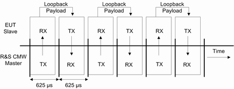
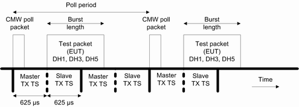
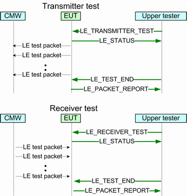
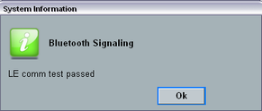

BR/EDR test mode is defined in the specification for Bluetooth wireless technology, core system package: volume 2, part C and volume 3, part D.
Direct test mode for LE tests is defined in the specification for Bluetooth wireless technology, core system package: volume 6, part F.
The EUT is connected via RF cable. Optionally, the secondary communication channel can be realized via USB interface, see "Test Setups".
The following tests are possible in test mode:
In loopback mode, the R&S CMW transmits Bluetooth packets to the EUT and the EUT decodes them before retransmitting (or looping back) them to the R&S CMW. The R&S CMW provides a selection of bit patterns (pattern type) to be used for loopback tests. The data can be whitened. Moreover, the packet type for test packets and the length of the test sequence can be set, see figure below.
Loopback delay is not supported. |

Proceed as follows:
Discover the EUT. See the steps 1 to 7 of the procedure for connection tests ("Executing Connection Tests").
Set test mode to loopback, see "Test Mode (BR/EDR)".
Press "Connect Test Mode" and wait for status to change to "Connected Testmode".
- To perform the TX measurements with the "Bluetooth TX Measurement" application, e.g., power or modulation measurements:
Press the multi-evaluation softkey which opens up the "Bluetooth TX Measurement" application. Using softkey has the side-effect of setting the scenario to combined signal path. - You can also perform Rx tests, see "RX Quality Measurement".
- To perform the TX measurements with the "Bluetooth TX Measurement" application, e.g., power or modulation measurements:
Press "Detach" to exit test mode and disconnect from the EUT.
In this mode, the R&S CMW instructs the EUT what to send to the R&S CMW. The R&S CMW transmits poll packets, the EUT (acting as a Bluetooth slave) answers in the following slave TX slot. TX tests with various bit patterns can be configured. Moreover, the poll period, the packet type for test packets and the length of the test sequence can be set, see figure below.

Proceed as follows:
Discover the EUT. See the steps 1 to 7 of the procedure for connection tests ("Executing Connection Tests").
Set test mode to TX test, see "Test Mode (BR/EDR)".
Press "Connect Test Mode" and wait for status to change to "Connected Testmode".
Press the multi-evaluation softkey which opens up the "Bluetooth TX Measurement" application. Using softkey has the side-effect of setting the scenario to combined signal path.
Perform the TX measurements with the "Bluetooth TX Measurement" application, e.g., power or modulation measurements.
Press "Detach" to exit test mode and disconnect from the EUT.
Direct test mode is used to control the EUT via secondary communication channel, to send test packets via radio interface and to retrieve the EUT measurement report. The test specification for Bluetooth LE technology (RF PHY test specification) uses direct test mode in all transmitter and receiver test cases for LE.
The R&S CMW supports direct test mode over HCI and through a two-wire UART interface. In addition to the RF connection, the R&S CMW uses a secondary communication channel via USB for the test control commands. For the test setup, refer to "Tests with USB Interface".
Frequency hopping and whitening are disabled in direct test mode.
At the beginning of direct test, the R&S CMW specifies the test frequency, packet length and the pattern, and initiate the TX or RX test. Then, the EUT transmits or receives the test packets until the R&S CMW sends the end command. Finally, the EUT sends the test report back to the R&S CMW.

Proceed as follows:
Connect your Bluetooth device to the R&S CMW. For the test setup, refer to "Test Setups".
Select the LE burst type. See "Burst Type".
Select the HW interface for LE connections. See "HW Interface".
If "HW Interface" = "USB", continue from step 8.
If "HW Interface" = "None", start the test directly at the EUT and continue from step 9.
Press the hotkey "Refresh COM Port List".
The USB connection is recognized automatically, the "Virtual COM Port" field in main view contains a value.
Select the used COM port . Adapt the transmission parameters. See "USB to RS232".
Press the hotkey "Connection Check" to reset the EUT and to verify the USB connection.

The dialog confirms, that the EUT has executed the reset command.
If there was error indication, repeat the step 3 to reconfigure the transmission parameters (typically the baud rate for "HW Interface" = "USB to RS232")
Select the frequency. See "Channel, Frequency".
Configure test packets. See "Signal Characteristics Configuration".
- To perform RX tests, press the "RX Meas." softkey, see also "RX Quality Measurement".
- For TX tests, perform the TX measurements with the "Bluetooth TX Measurement" application e.g. power or modulation measurements:
Press the multi-evaluation softkey which opens up the "Bluetooth TX Measurement" application. Using softkey has the side-effect of setting the scenario to combined signal path. Option R&S CMW-KM611 is required.
To repeat the step 3, step 6 or step 8 to reconfigure the transmission parameters, turn off all TX and RX LE measurements.